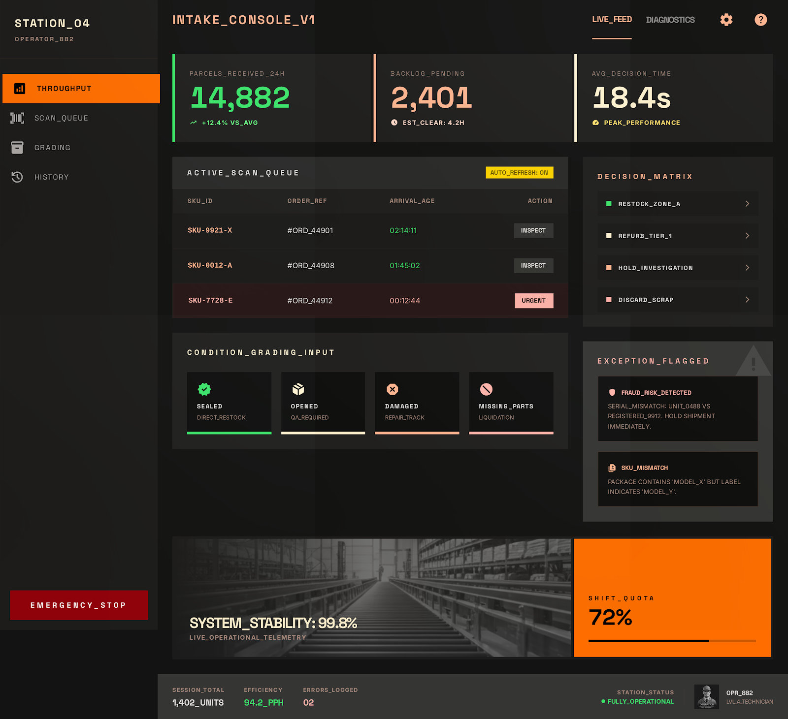

PF SAFE DEMO · 2026-03-24-p003
Warehouse Return Intake Console
A return-intake workspace that helps warehouse teams classify incoming returns fast and route them without rework.
ingest status
Imported from today’s Stitch exportIndustrial Stitch screen is stored locally and exposed through a PF-safe viewer, keeping the demo portable and free of remote UI dependencies.
- Source sanitized for PF hosting
- No external CDN/font dependency in live demo path
- Preview uses shipped local image artifact
